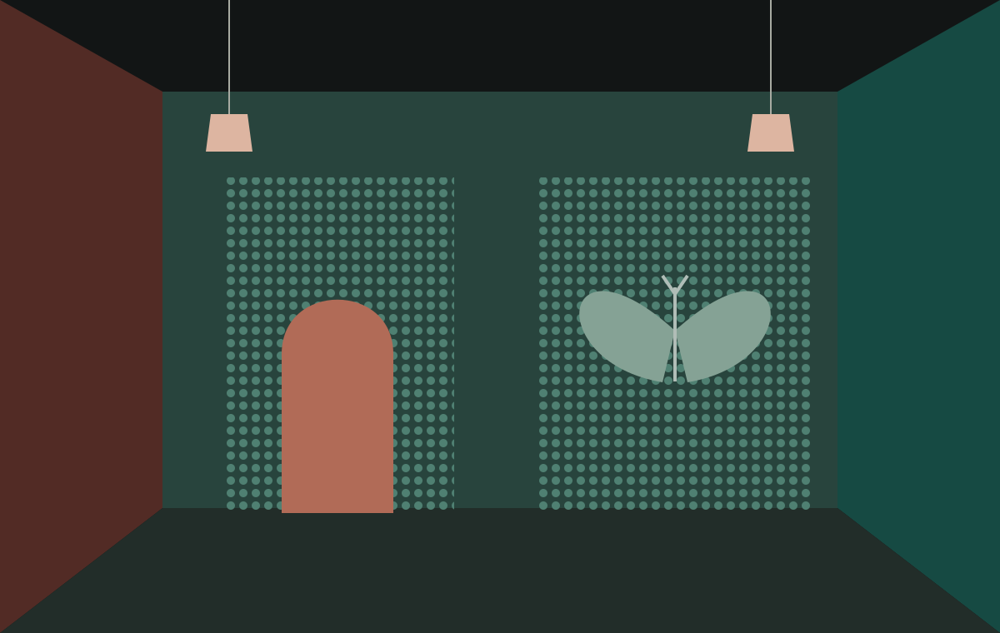

The door loses its edge.
Its dots share nearly the same modelled gray level as the wall. Their colour difference carries the doorway, so that outline fades in the matching preview.
A door in the noise
Some colours can be different
and still leave the same shadow.
An optional art experiment, not an eye test. Your experience may differ from the previews.
A palette tuned for the protanopia approximation.

Original coloursThe doorway uses colour. The moth keeps a faint lightness pattern. Neither is a test.
These are fixed full-severity model approximations, not descriptions of your vision. Tritanopia is included for comparison; these rooms are not designed to turn gray in that model. The controls are never filtered.
Two ways to hide
Its dots share nearly the same modelled gray level as the wall. Their colour difference carries the doorway, so that outline fades in the matching preview.
A small brightness difference draws the wings. Colour noise runs across them. In the matching preview that noise quiets down, and the moth may be easier to find.
Press “Trace both secrets” for high-contrast outlines. No colour distinction, precise gesture or particular vision is required. Nothing is scored, inferred, stored or sent.
A copper door is painted into the dotted wall on the left. A moth rests in the right-hand alcove. Quieting the colour can make the door disappear while leaving the moth’s lightness pattern. The moth was not guarding the door. It was keeping the room company.
In the moss room, the same arrangement wears a different palette. The story and the route through it stay the same.
The art uses the severity-1 matrices from Machado, Oliveira and Fernandes (2009), applied to linear sRGB and then converted back for display. The two palettes were constructed to approach neutral grays in their matching model.
Real colour vision varies. Displays, lighting, surrounding colours and partial colour-vision differences can change the effect. This cannot diagnose colour blindness or tell you what another person sees. No clinical test plates are reproduced.